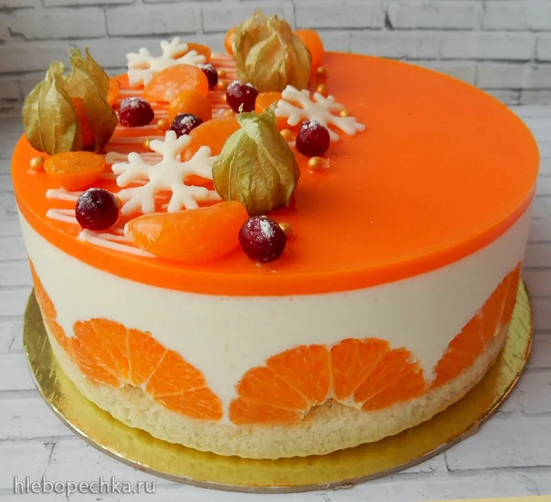
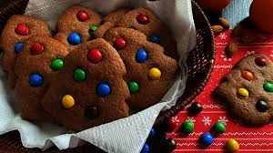
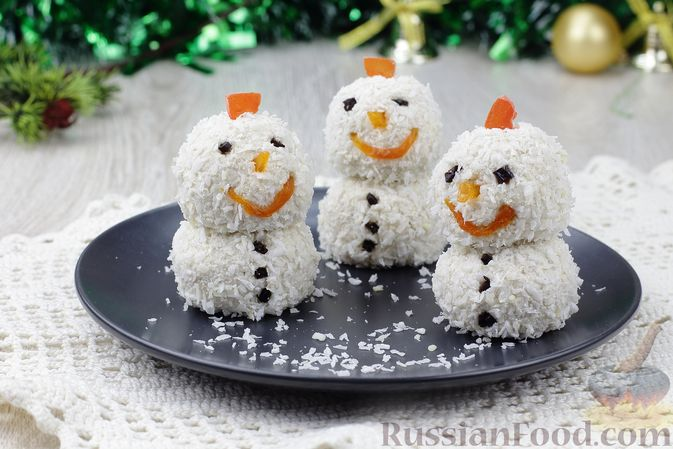
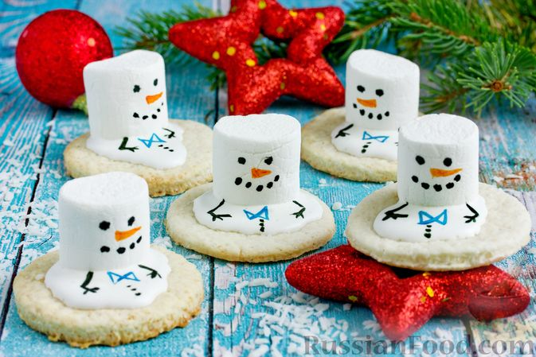
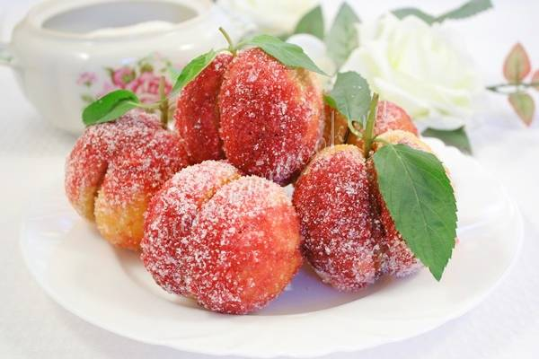

Новогодние десерты:

Мандариновый чизкейк
Ингредиенты: печенье, мандарин, масло сливочное, творог, сметана, сахар, крахмал, яйца, вода, сахар ванильный, желатин

Шоколадное песочное печенье "Ёлочки"
Ингредиенты: мука, сахар, масло сливочное, драже M&Ms, яйца, какао-порошок, разрыхлитель, соль

Творожно-банановые шарики "Снеговички"
Ингредиенты: творог, кокосовая стружка, банан, мёд, орех грецкий, чернослив без косточек, курага, цукаты

Новогоднее печенье "Тающие снеговики"
Ингредиенты: масло сливочное, ванилин, разрыхлитель, молоко, сахар, мука, крахмал картофельный, яичный белок, сахарная пудра, зефир, краситель

Пирожные "Персики" со сгущенкой
Ингредиенты: мука, разрыхлитель, сахар, сахар ванильный, сметана, яйца, масло сливочное, лимонная кислота, орех, молоко сгущенное, сок свеклы, сок морковный, мята свежая